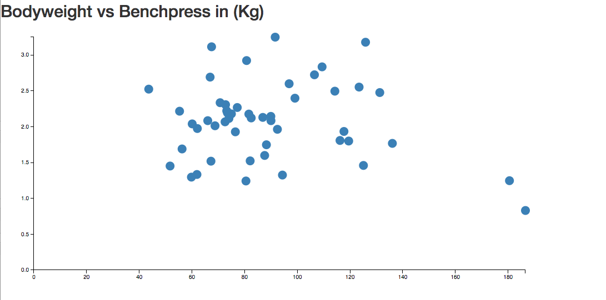
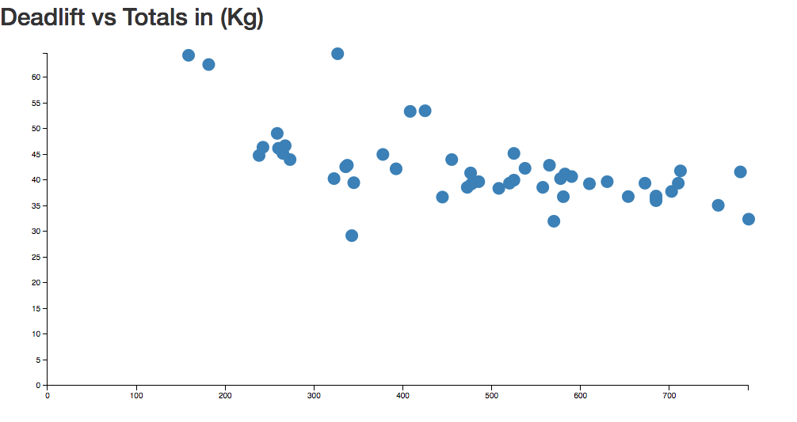

## Salty Splatoon Getting Strong with data.
The Concept
## OpenPowerlifting None of this could have happened without [OpenPowerLifting](http://www.openpowerlifting.org/). - Two guys - Collecting data by hand - Getting fellow meatheads to send records and coverting them to csv They're angels.
## The Data - Over 7,000 powerlifting meets - Over 123,000 athletes - Over 253,000 lifts
## The data begs the question ### How strong are these people? (How much stronger than me?)
## The Tech Stack - Postgres Server Running on Amazon - Flask server - Deployment from GitHub master Branch to Heroku
The Features
### Search - Search through Athletes, Lifts, and Meets - Can search on athlete name, lift size, age, and bodyweight - Can search meets based on country
### Track lift Progress - Record user's lifts over time - Chart progress
### Visualizations - Display trends in the data using random samples from the database. - Sampled randomly from 50 athletes in the database
What multiple of your Bodyweight can you bench?

These people Deadlift a lot

And Don't Forget about the total lifts
(Some people's total lift's are over 1 ton)
Flask Models
- Flask SqlAlchemy provides an ORM to Postgres - So instead of writing raw sql into psycopg2 we can use object oriented principles we're used to.
### Psycopg2 driver (ugly) ```python # Connect to an existing database >>> conn = psycopg2.connect("dbname=test user=postgres") # Open a cursor to perform database operations >>> cur = conn.cursor() # Execute a command: this creates a new table >>> cur.execute("CREATE TABLE test (id serial PRIMARY KEY, num integer, data varchar);") ```
### Flask-Sqlalchemy (Art) ```python total = float(deadlift) + float(squat) + float(bench) athlete_lifts = Athlete_lifts.query.order_by(desc(Athlete_lifts.total_kg)).all() lifts = [float(lift.total_kg) for lift in athlete_lifts] ```
## K. Sounds good. Where's the app? Rude. It's right [here](http://howtoughareyou.herokuapp.com/).